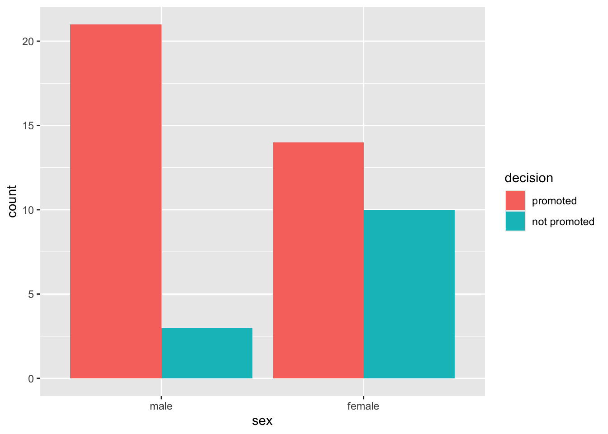
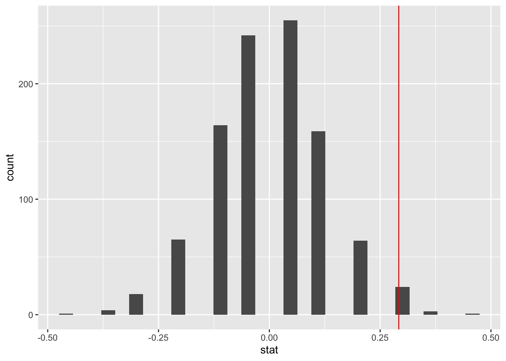

Code
sex_discrimination |>
ggplot(aes(x = sex, fill = decision)) +
geom_bar(position = "dodge")
Inference for Difference in Two Proportions
In this lab, we will introduce statistical inference using a popular package known as infer (short form for inference). Specifically, we will conduct a hypothesis test for difference in two proportions via a randomization test.
Go to posit cloud (https://posit.cloud) and open the MATH 144 project. Once your MATH 144 project is open, clean up the console and the environment. Close any open documents and data sets that you don’t need. Use the brush tools to clean up your console, and environment panels.
Next, create your new quarto file as follows:
File > New File > Quarto document. Use the file name Lab_4. Do not delete the .qmd extension.
Add the author and title keys to the YAML section. Write your name (in quotes) in the author field and set the title to “Introduction to Statistical Inference - Hypothesis Testing".
Change the output value to pdf then click on render. At this point, a popup blocker may show up on your screen. If this happens, just click “try again”. A PDF document with your name and title should pop up on a new browser tab. As you work through the lab, it is good practice to render from time to time to make sure everything is working as expected.
Here is the Context/Scenario:
Forty eight male bank supervisors were each given identical resumes to decide whether the candidate should be promoted or not. Twenty four of the files were labelled as male, meaning the applicant was male, while the other 24 were labelled as female.
We seek to answer the following research question via hypothesis testing:
Research Question: “Are individuals who identify as female discriminated against in promotion decisions made by hiring managers who identify as male?”
The data set is called sex_discrimination and is available in the openintro package. Apart from openintro, we will need the tidyverse and infer packages. The infer package contains a wide range of functions including functions for running simulations and calculating statistics. Since we have installed openintro and tidyverse before, we only need to install infer. Run the code below in the console to install the infer package:
install.packages("infer")After installing infer , insert a new code chunk and use the code below to load packages and the data set called sex_discrimination.
#| include: false
library(tidyverse)
library(openintro)
library(infer)
data(sex_discrimination)Run the above code. If everything runs correctly, a new object named sex_discrimination will pop up in the environment area. This is the data set. Open the data set and examine it before you proceed. Check what the cases are and how many they are. Check the variables and determine the predictor and response variables making sure this aligns with the research question.
We write the null and alternative hypothesis in words and in symbols as follows:
Null Hypothesis in words: There is no difference in promotion rates (proportions) between male and female candidates in the population (i.e., There is no discrimination against female candidates in promotion decisions and any observed difference in our sample is due to random chance).
In symbols, we write the null hypothesis as
\[H_0 : p_M-p_F=0\]
where, \(p_M\)= proportion of male candidates that would be promoted in the population, and \(p_F\)= proportion of female candidates that would be promoted.
Alternative Hypothesis in words: There is a difference in promotion rates between male and female candidates in favor for males (i.e., There is discrimination against female candidates in the population).
In symbols, we write the alternative hypothesis as
\[H_A : p_M-p_F>0\]
We will run a hypothesis test to see if the sample data provides strong enough evidence to reject the null hypothesis.
Since these are two categorical variables (gender and decision), we can visualize the distribution of the data using a side-by-side bar plot as shown below:
sex_discrimination |>
ggplot(aes(x = sex, fill = decision)) +
geom_bar(position = "dodge")
How would you describe the distribution of the data based on the bar plot above? Compare the promotion rates for male and female candidates. Which group has the higher promotion rate, and approximately how much higher is it?
The observed statistic in this scenario is the difference in proportion of promotions between the male and female candidates observed in the sample. Since these are statistics (not parameters), we use \(\hat{p_M}\) (read as p-hat) to denote the proportion of promoted males and \(\hat{p}_F\) to denote the proportion of promoted females. The observed statistic is the difference in the two sample proportions:
\[Obs\_Stat=\hat{p}_M-\hat{p}_F\]
In R, we can use the count() and group_by() functions to create a summary table as shown below:
sex_discrimination |> #get your data
count(sex, decision) |> #count cases in both variables
group_by(sex) |> #group cases by sex (predictor)
mutate(prop = n / sum(n)) #calculates the proportions# A tibble: 4 × 4
# Groups: sex [2]
sex decision n prop
<fct> <fct> <int> <dbl>
1 male promoted 21 0.875
2 male not promoted 3 0.125
3 female promoted 14 0.583
4 female not promoted 10 0.417From the table, we can compute the observed statistic as follows:
\[\begin{align} \hat{p}_{diff}&=\hat{p_M}-\hat{p_F}\\ &=0.875-0.5833\\ &\approx 0.292 \end{align}\]
There are 4 main functions in the infer package that we will use over and over in coming days and weeks. The functions are:
specify(): this allows you to specify the variables and the relationship you are interested in. In the sex discrimination study, sex is the predictor and decision is the response.
hypothesize(): This is where you specify the nature of the null hypothesis.
generate(): runs the simulations that you are interested in. We will set this to permute. The files will be randomly assigned to each group (male and female) ignoring the observed difference. This is where the name randomization test comes from.
calculate(): allows you to calculate statistic of interest for each simulation. In this case diff in props (difference in proportions).
Let us now use the infer package to run the simulations for the sex discrimination case study. We save the simulated data as simulated_diffs. We will need this data in later stages.
simulated_diffs <- sex_discrimination |>
specify(decision ~ sex, success = "promoted") |>
hypothesize(null = "independence") |>
generate(reps = 1000, type = "permute") |>
calculate(stat = "diff in props", order = c("male", "female"))Under specify(), the order is response~predictor, and the success level is set to “promoted”.
Under hypothesize(), we set null to “independence” because our null hypothesis assumes the two variables are not associated.
Under generate(), we want to do 1000 repeats, and the type of shuffling is called “permute”.
Under calculate(), we state the statistic we want and the order in which we want the difference done.
After running the above code, a new object named simulated_diffs will pop up in the environment area. This object is our null distribution and it models what the distribution looks like assuming the null hypothesis were true. Double click on the object to view it or use the head() function to view the first few rows of the data set.
head(simulated_diffs)Response: decision (factor)
Explanatory: sex (factor)
Null Hypothesis: indepe...
# A tibble: 6 × 2
replicate stat
<int> <dbl>
1 1 -0.0417
2 2 -0.0417
3 3 0.0417
4 4 -0.0417
5 5 0.0417
6 6 -0.0417Next, we want to use ggplot2 package to create a histogram to visualize the distribution of the differences computed above. Remember we stored the differences as simulated_diffs. We will also place a vertical line on the histogram to see the location of the observed statistic (the original difference of 0.292) relative to the graph. We use the code below:
ggplot(data=simulated_diffs, aes(x = stat)) +
geom_histogram()+
geom_vline(aes(xintercept = .292), color = "red")
Note that this null distribution histogram is centered around 0 because under the null hypothesis, we expect no difference in promotion rates between the sexes.
The P-value is the proportion of simulated differences that are at least as extreme as the observed statistic (i.e., the red line and beyond). It is the probability of observing a difference as extreme as 0.292 or more extreme assuming that the null hypothesis were true (i.e., that there is no discrimination going on).
The infer package comes with a function known as get-p-value() for computing the p-value from the null distribution. See code below:
simulated_diffs |>
get_p_value(obs_stat = 0.292, direction = "greater")# A tibble: 1 × 1
p_value
<dbl>
1 0.004Here, the argument obs_stat is used to set the observed statistic, while direction is for specifying the alternative hypothesis. Since our observed statistic is to the right of the center, and our alternative hypothesis is directional, we set the direction argument to “greater”. If the alternative hypothesis was bidirectional or two-sided (i.e., \(p_M-p_F \neq 0\)), we would set direction to two-sided, which means we would be looking for values that are as extreme as 0.2917 in either direction (both left and right tails of the distribution). This would essentially double the P-value.
The P-value obtained is 0.003 (or 0.3%) is very small. This means that if there was no discrimination going on (i.e., null hypothesis were true), we would would expect to see a difference of at least 0.292 about 0.3% of the time. This low probability indicates that observing such a large difference from chance alone is very rare.
At this point, you may be wondering how small a P-value needs to be to reject the null hypothesis. The commonly used cu off mark is 0.05 (or 5%). We call this cutoff the discernibility level. Anything below this is considered rare.
Here is how to write the conclusion for your hypothesis test in context:
The difference in promotion rates between male and female candidates in the sample was 0.292 (or 29.2%). A hypothesis test of the difference produced a P-value of 0.003 which is less than the discernibility level of 0.05. Therefore, we reject the null hypothesis and conclude that the data provides strong evidence that discrimination is likely going on against female candidates in the organization.
Create a new level 2 header called Lab 4 Exercises and answer the questions below. Each question should be labelled appropriately (e.g., Question 1, Question 2) using level 3 headers. There is no need to retype or copy and paste the questions, just your responses. When you are done, render the document to generate a PDF, download it and submit to Canvas under Lab 4. The lab will be graded out of 20 (Ten points for exploration work above, and 10 for the exercises). The lab exploration work must have headers and descriptive text describing what each code chunk is achieving. Avoid copying and pasting without reading.
Scenario:
One-hundred and fifty students were recruited in a study that aimed to understand whether reminding college students about saving money for later would make them more thriftier. The students were split into 2 equal groups (control and experiment). Each student was given the following prompt:
“Imagine that you have been saving some extra money on the side to make some purchases, and on your most recent visit to the video store you come across a special sale on a new video. This video is one with your favorite actor or actress, and your favorite type of movie (such as a comedy, drama, thriller, etc.). This particular video that you are considering is one you have been thinking about buying for a long time. It is available for a special sale price of $14.99. What would you do in this situation? Buy video or Not buy video?”
Students in the control group were given the following two options:
Students in the experiment group were given a slightly modified option B:
Research Question: Does reminding students about saving money for later make them more thriftier (i.e., less likely to buy the video)?
The goal is to try and answer this research question using a hypothesis test for difference in two proportions.
The data set is called opportunity_cost and is available in the openintro package.
(1 pt) Load the opportunity_cost data set into your work space. Identify the predictor and response variables. Be sure to write down the variable names exactly as they are appear in the data set.
(1 pt) State the appropriate null and alternative hypotheses (in words) that you would test.
(2 pts) Create a side-by-side bar graph to visualize the variables of interest in the study.
(2 pts) Calculate the relevant observed statistic in the scenario above. Be sure to show your work and include the R code used.
(2 pts) Use the infer package functions to run 500 simulations under the null hypothesis and save the results as null distribution. Be sure to specify the correct variables and relationship under specify(), the correct nature of the null hypothesis under hypothesize(), the correct type of shuffling under generate(), and the correct statistic under calculate().
(2 pts) Create a histogram to visualize the null distribution from question 5 above. Be sure to place a vertical line to show the location of the observed statistic from #4 above. Describe the shape of the distribution and explain why it is centered around 0.
(2 pts) Use the get-p-value() function to find the P-value then write an interpretation of the result in context.